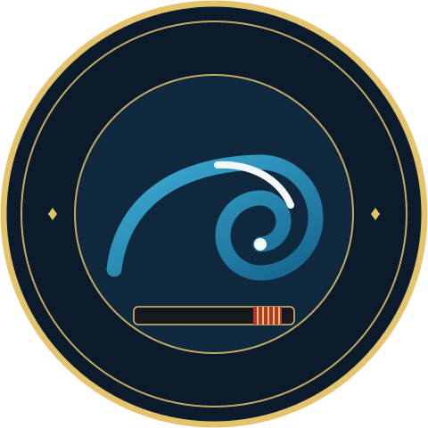

La technique avant la force
L'apprentissage de contrôles efficaces et de soumissions variées, placés avec fluidité et souplesse.

Une académie fondée par Yannick Beven, mariant la rigueur des arts martiaux et le lifestyle de l'océan.
Bienvenue à la YBJJ Academy
Bienvenue à la YBJJ Academy. Plus qu'un simple club d'arts martiaux, notre académie est un lieu de rassemblement pour les passionnés de Jiu-Jitsu Brésilien (JJB), les surfeurs et les sportifs de tous horizons. De l'initiation pour les enfants aux entraînements pour sportifs de haut niveau (surfeurs professionnels, footballeurs internationaux), la YBJJ Academy offre un enseignement technique de très haute qualité dans un esprit de convivialité, d'entraide et de dépassement de soi.
Le Fondateur
Né au Brésil, Yannick Beven est une figure incontournable du Jiu-Jitsu Brésilien et du surf en France. Ancien surfeur professionnel, il a découvert le JJB grâce à Royler Gracie avant d'être formé et gradé par Zé Marcello.
Aujourd'hui Ceinture Noire 5ème Dan de Jiu-Jitsu Brésilien, Yannick a commencé à enseigner dans son propre garage avant de fonder la YBJJ Academy (historiquement basée à Capbreton et aujourd'hui installée à Anglet).
En plus d'être professeur de JJB, Yannick est un préparateur physique et coach mental de renommée. Il accompagne et entraîne quotidiennement des sportifs de haut niveau, dont de nombreux surfeurs professionnels du circuit mondial (comme Michel Bourez ou son frère Patrick Beven) ainsi que des légendes du sport français comme Bixente Lizarazu.
Ils s'entraînent à ses côtés :
Notre Philosophie
Sur la Côte Basque et Landaise, le surf et le Jiu-Jitsu Brésilien partagent un ADN commun : l'équilibre, l'humilité face aux éléments et l'exigence physique. À la YBJJ Academy, ces deux univers se rencontrent naturellement.
Sur les tatamis, nous mettons l'accent sur trois piliers :
L'apprentissage de contrôles efficaces et de soumissions variées, placés avec fluidité et souplesse.
Un corps fort protège et performe. Chaque entraînement commence par des sessions intenses de « drills » et de renforcement musculaire pour préparer le corps aux exigences du combat.
Le JJB n'est pas qu'un sport, c'est un art de vivre. Le respect, la discipline et la résilience appris sur le tatami s'appliquent directement dans la vie quotidienne.
Nos Cours · Enfants et Adultes
Yannick accorde une importance toute particulière à l'enseignement des plus jeunes. Les cours pour enfants se déroulent dans une ambiance studieuse et bienveillante. Au-delà des techniques martiales, l'objectif est de leur transmettre les valeurs du JJB.
À la fin de chaque séance, un temps est pris pour discuter avec eux de la manière d'appliquer le respect et la discipline dans leur quotidien.
Le groupe adulte compte de nombreux passionnés allant du débutant au combattant confirmé. Le cours type se déroule en trois temps :
Environ 30 à 45 minutes de renforcement (utilisation de TRX, poids, cardio) dédiées à la condition physique.
Démonstration et répétition des postures, passages de garde et soumissions, sous l'œil attentif des instructeurs.
Mise en application lors de combats libres, toujours dans un esprit de camaraderie et de sécurité.
Envie d'essayer ? Petits et grands sont les bienvenus sur le tatami.
Venir s'entraînerInfos Pratiques & Contact
Moskova HQ – Allée Louis de Foix
64600 Anglet, France
Imanol Anchordoqui